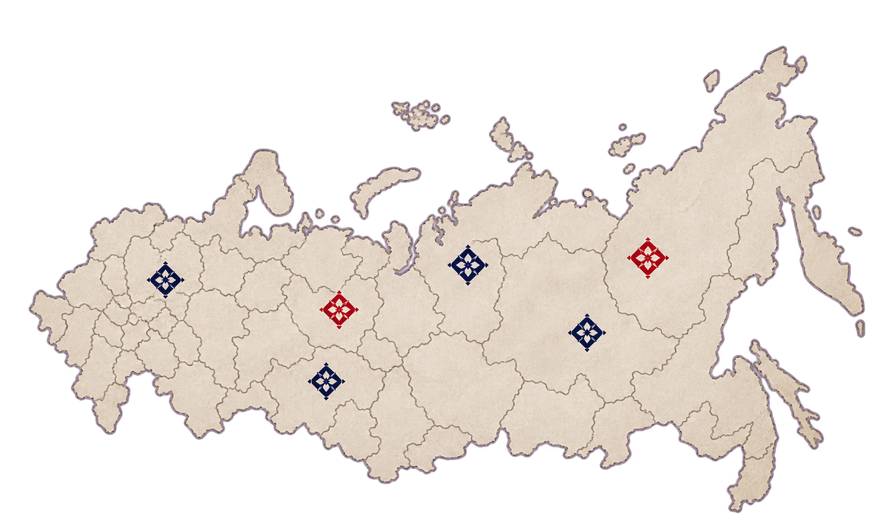
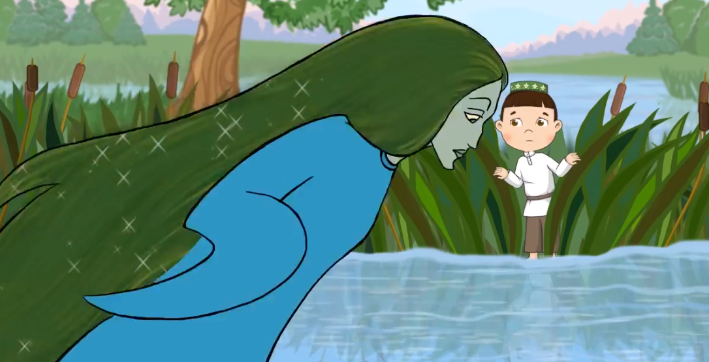
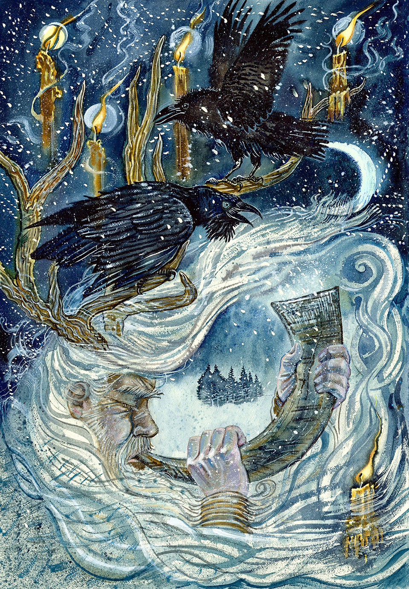
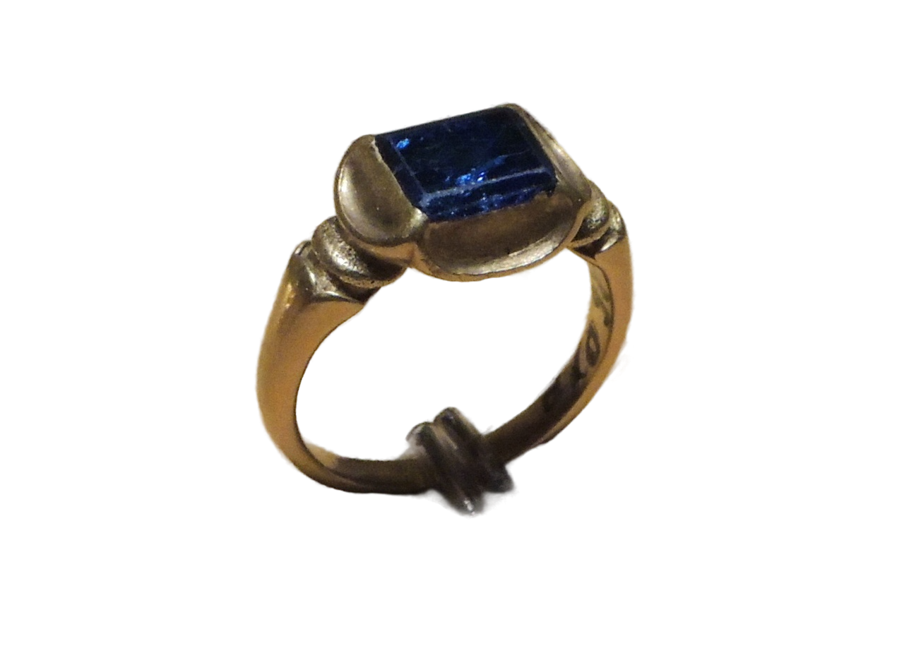
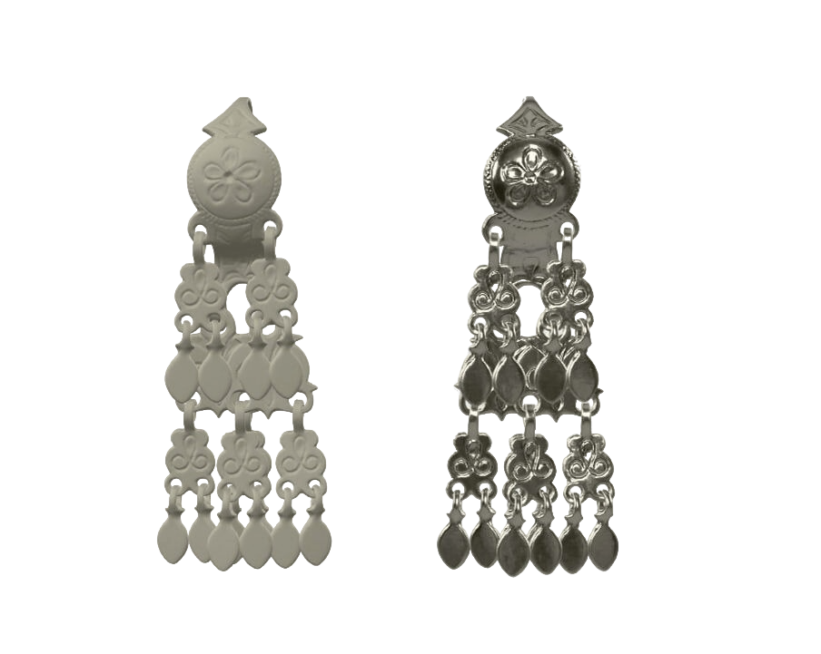
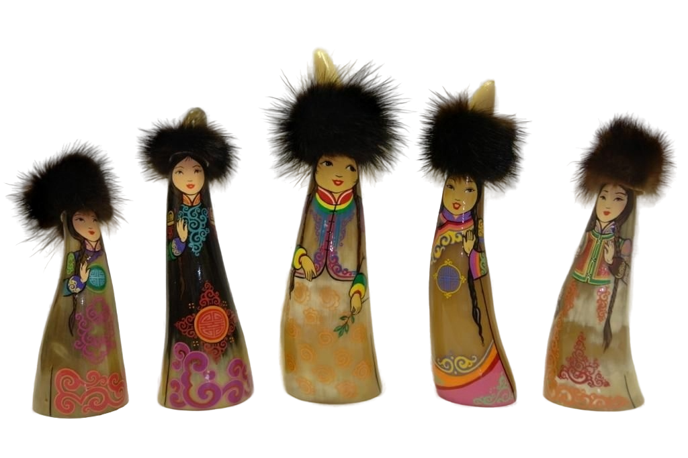
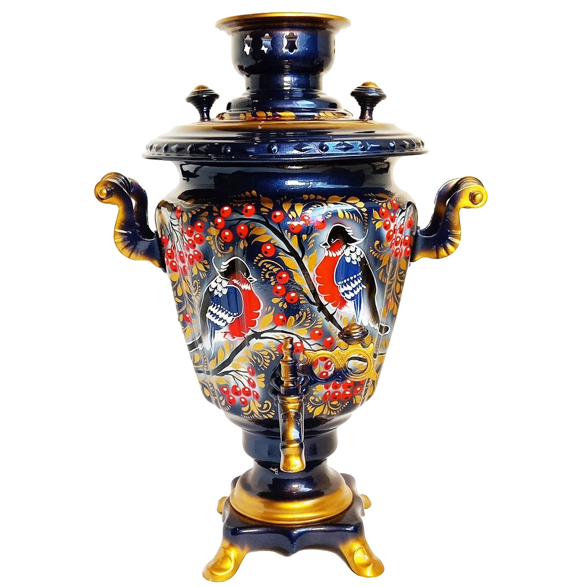

АРТЕФАКТ
История оставляет след. Открой её код.
Интерактивные истории о культуре народов России и мира: от древних лесных мифов и обережных орнаментов до реальных артефактов в музеях со скидкой 10% и персонального паспорта исследователя.

Выбери культуру Каждый артефакт — отдельный мир
«Каждый артефакт — это не просто вещь, а живая история людей, земли и времени, переданная через поколения.»
Татарстан Где встречаются Восток и Запад
Здесь, среди вековых традиций, переплетаются шедевры зодчества и древняя тамбурная вышивка. Здесь собраны истории, мифы и образы, основанные на этнографических источниках.
Читать сказание
Легенды, сакральная лексика и обрядовые коды.
Смотреть фильм
Кинематографичная история с аудиогидом.


↔ Двигайте ползунок, чтобы сравнить архивный облик XIX века и современный вид
Легенда о Шурале Владыка древнего леса

Нажмите на эпизод ниже, чтобы переключить таймкод и изучить описание визуального ряда:
Найди след Какой узор был оберегом героя?
Наведите археологическую лупу на ткань справа, чтобы детально рассмотреть переплетение золотных нитей, и выберите верный обережный мотив:

🔍 Наведите мышь на экспонат: лупа археолога проявляет зашифрованный тюльпан в ромбе
Казанский орнамент Шедевр кожаной мозаики и золотного шитья
XIX век · Казанская губерния · Национальный музей Республики Татарстан
Орнамент использовался в праздничных ичигах (узорной кожаной обуви), каляпушах и нагрудных украшениях. Растительный мотив тюльпана символизирует пробуждение земли, а ступени ромба — силу рода и защиту от невзгод.
Национальный музей Республики Татарстан (ул. Кремлёвская, 2) · Зал №3 этнографического фонда.
Твой след в реальном мире Скидка 10% на вход и блюда кухни
Поздравляем с прохождением онлайн-экспедиции! Предъявите этот купон на кассе музея или подтвердите визит по геолокации и фото.
Национальный музей РТ
Казань, Кремлёвская ул., 2 · Зал этнографии
Покажите на кассе музея или распечатайте купон
Твой этноатлас Карта живого наследия

Открытые маршруты:
Фольклор, анимация и эпосы Сказания народов России

«Гора самоцветов»
Шедевры студии «Пилот»: Куйгорож (мордовская), Кот и лиса (русская), Про ворона (чукотская).

«Су анасы» (Водяная)
Легенда о золотом гребне, духе чистой воды и силе совести по мотивам поэзии Габдуллы Тукая.

«Джангар» и «Гэсэр»
Героические сказания Калмыкии и Бурятии о сказочной стране Бумба и подвигах защитников людей.

Нюргун Боотур и Олонхо
Памятник нематериального наследия Саха: борьба за срединный мир, священное дерево Аал Луук Мас.
Моя коллекция и ИИ-Мастерская Генерация оберегов и открыток

Казанский орнамент XIX век · Подтверждено
Серебряные серьги XIX век · Скань и зернь Степная домбра
XVIII век · Дерево, резьба
Степная домбра
XVIII век · Дерево, резьба

Кожаный амулет XIV век · Находка экспедицииМастерская наследия
Выберите найденные символы и легенды: нейросеть соединит их в персональный цифровой оберег-открытку, которую можно отправить близким.
Нить, связующая лес и дом
В узоре казанского тюльпана оживает древняя сказка: пока в доме помнят язык предков и берегут родовой орнамент, лесной дух хранит покой семьи сквозь века.
Совместное исследование
Вместе исследовано: 20 артефактов в 4 регионах